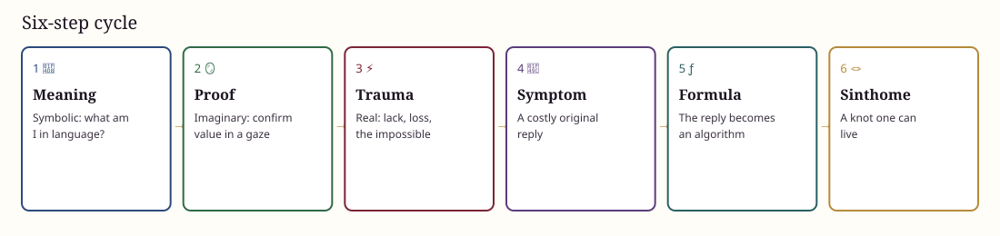
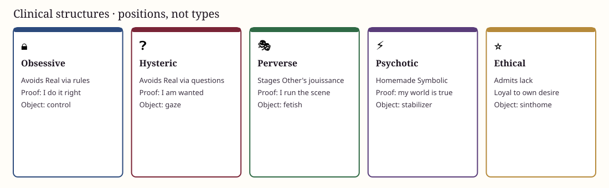

1 · 📘
Meaning
The subject asks what the world, and their own being, could mean.
Choose a map · SVG edition
English pages draw the concepts in SVG. The original photo-charts live on the Turkish side. These are clinical maps, not diagnoses.
The subject asks what the world, and their own being, could mean.
They try to confirm their value in the gaze of the Other.
Lack, loss, and the impossible show through the story.
A painful but original reply to that encounter.
The symptom hardens into a repeated life algorithm.
A singular way of living with lack, rather than fleeing it.

Positions toward the Symbolic, the Imaginary, the Real, and the desire of the Other — not personality types.
Avoids the Real through rules, delay, guilt, and control.
→Avoids the Real by questioning. Proof is being wanted.
→Organizes the Other’s jouissance: staging, fetish, law as a tool.
→The Name-of-the-Father is foreclosed. Meaning is self-built.
→Accepts lack and stays loyal to a chosen desire.
→A fourth ring that holds RSI together.
→
⚠️ Teaching tools, not diagnostic labels. Each subject is singular.